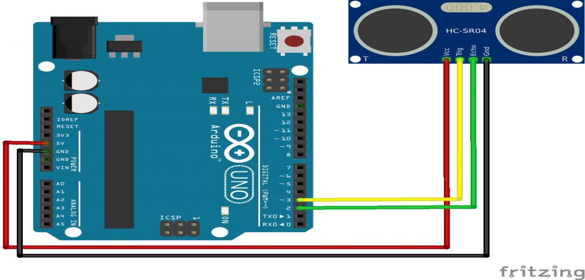

An ultrasonic sensor is an electronic device that measures the distance of a target object by emitting ultrasonic sound waves, and converts the reflected sound into an electrical signal.Ultrasonic sensors have two main components: the transmitter (which emits the sound) and the receiver (which encounters the sound after it has travelled to and from the target).In order to calculate the distance between the sensor and the object, the sensor measures the time it takes between the emission of the sound by the transmitter to its contact with the receiver. The formula for this calculation is D = ½ T x C (where D is the distance, T is the time, and C is the speed of sound ~ 343 meters/second).Ultrasonic sensors are used primarily as proximity sensors. They can be found in automobile self-parking technology and anti-collision safety systems. Ultrasonic sensors are also used in robotic obstacle detection systems, as well as manufacturing technology.
Specifications
Power Supply: DC 5VWorking Current: 15mA
Working Frequency: 40Hz
Ranging Distance : 2cm – 400cm/4m
Resolution : 0.3 cm
Measuring Angle: 15 degree
Trigger Input Pulse width: 10uS
Dimension: 45mm x 20mm x 15mm

| On Sensor | On Raspberry | On Arduino |
|---|---|---|
| Vcc | Power supply 3.5V to 5V (pin 1 or 2) | Power supply 3.5V to 5V |
| Ground(GND) | Ground (pin 6) | Ground (GND) |
| ECHO | Pin 18 | Data pin (pin D2) |
| TRIG | Pin 12 | Data pin(pin D3) |
It can be worked with
Working of DHT with Arduino Uno

#define echoPin 2 // attach pin D2 Arduino to pin Echo of HC-SR04
#define trigPin 3 //attach pin D3 Arduino to pin Trig of HC-SR04
long duration; // variable for the duration of sound wave travel
int distance; // variable for the distance measurement
void setup() {
pinMode(trigPin, OUTPUT); // Sets the trigPin as an OUTPUT
pinMode(echoPin, INPUT); // Sets the echoPin as an INPUT
Serial.begin(9600); // Serial Communication is starting with 9600 of baudrate speed
}
void loop() {
digitalWrite(trigPin, LOW); // Clears the trigPin condition
delayMicroseconds(2);
digitalWrite(trigPin, HIGH); // Sets the trigPin HIGH (ACTIVE) for 10 microseconds
delayMicroseconds(10);
digitalWrite(trigPin, LOW);
duration = pulseIn(echoPin, HIGH); // Reads the echoPin, returns the sound wave travel time in microseconds
// Calculating the distance
distance = duration * 0.034 / 2; // Speed of sound wave divided by 2 (go and back)
// Displays the distance on the Serial Monitor
Serial.print("Distance: ");
Serial.print(distance);
Serial.println(" cm");
}